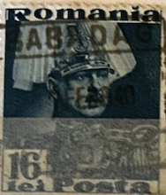
| SOURCE | TITLE| IMAGE MATCH | click to source page |
| Etsy | Buy Vintage WW1 Postcard: Gott Ist Mit Uns, Military Ephemera Online in India - Etsy | 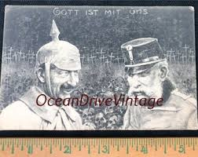 |
| Kaiser Wilhelm and Franz Joseph of Austria Hungary. : r/Kaiserposting | 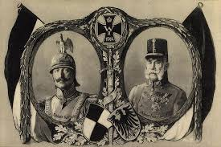 | |
| matthew's island | MATTHEW'S ISLAND | "Home of North America's favourite gay lumberjack" | Page 3209 | 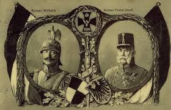 |
| YouTube | AI Kaiser Wilhelm II - YouTube | 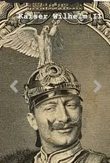 |
| MyConfinedSpace | Jennifer Aniston with her parents 1970s - Images | 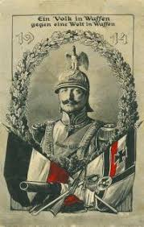 |
| DeviantArt | Kaiser Adolf I. (Alternate History) by BlusterAster12 on DeviantArt | 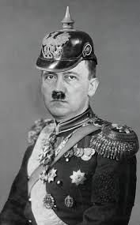 |
| Mauricio Sullivan (mauriciosulliva) - Profile | Pinterest | 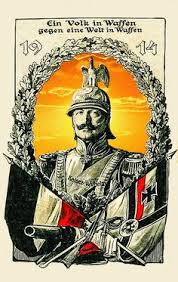 | |
| Etsy | Vintage WW1 Postcard: Gott Ist Mit Uns, Military Ephemera - Etsy | 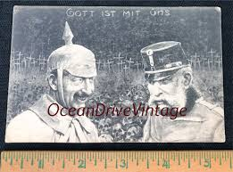 |
| PicClick | UNA PARTICIPACION ACTIVA - Paul Josef Cordes - 1998 - Spanish Catholic $35.00 - PicClick | 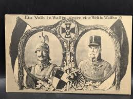 |
| eBay | WWI ww1 war humor satirical propaganda original c1915 postcard | eBay | 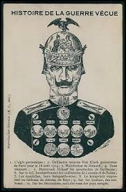 |
| Alamy | Künstler-Kriegs-Postkarte No. 1 von J. C. König & Ebhardt Hannover Heinz Keune Ich kenne keine Parteien mehr Bildseite Stock Photo - Alamy | 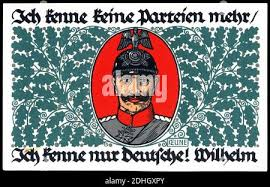 |
| A Swiss twist: banknotes in vertical format. 🇨🇭 Did you know that starting in 1995, with the introduction of the 8th series, Swiss banknotes switched from a horizontal to a vertical format? | 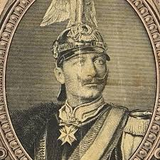 | |
| Art.com | Passepartout Kaiser Wilhelm II, Franz Joseph I Giclee Print | Art.com | 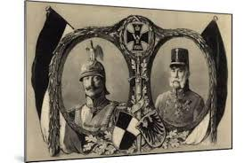 |
| Alamy | Portrait of Otto von Bismarck. 1880 Otto, Prince of Bismarck, Count of Bismarck-Schönhausen, Duke of Lauenburg (1815–1898) was a conservative German Stock Photo - Alamy | 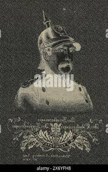 |
| Getty Images | Otto Von Bismarck Portrait Art Nouveau Illustration High-Res Vector Graphic - Getty Images | 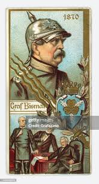 |
| eBay | Germany WWI Cinderella: "We will fight against a world of enemies" - cw67.12 | eBay | 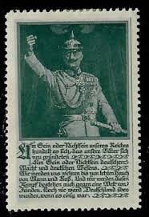 |
| Bridgeman Images | Image of God is with us. Anti-Central Powers propaganda postcard, First World by European School, (20th century) | 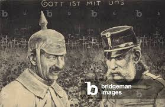 |
| The King conquered it, the Count shaped it, the Field Marshall defended it until it was saved and unified at last by the soldier" - 1933, Hans von Norden : r/PropagandaPosters | 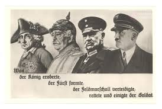 | |
| BoardGameGeek | Guns of August, Turn 3 Oct-1914 | Video | BoardGameGeek | 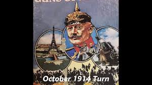 |
| French Tradecard - Wilhelm II, German Emperor | 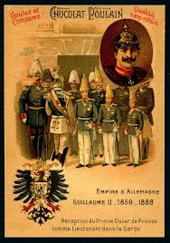 | |
| Imgur | Fashwave collection - fashwave post - Imgur | 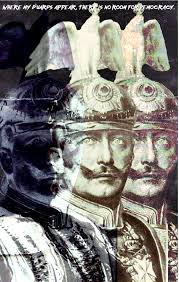 |
| Alamy | Schlesien hi-res stock photography and images - Alamy | 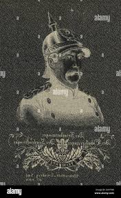 |
| IMAGO | Fürst Otto von Bismarck, Portrait, Pickelhaube, Fünfzigjähriger !AUFNAHMEDATUM | 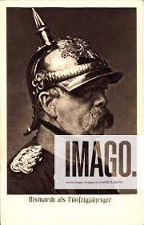 |
| Raspberry Pi Foundation | Watch Tim Peake with the Astro Pi flight units in space! - Raspberry Pi Foundation | 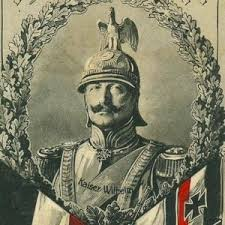 |
| Wargame Design Studio | First World War Campaigns 4.05.1 Updates – Wargame Design Studio | 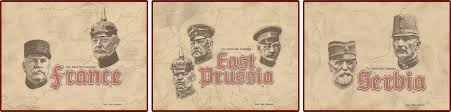 |
| Alamy | German historical photo postcard: soldier in forage cap plays guitar sitting on a chair. The army's leisure, world war two, Germany, Third Reich Stock Photo - Alamy | 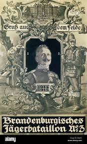 |
| eBay | PC CPA Propaganda Satire Politic Regardez attentivement ce Portrait (b12931) | eBay | 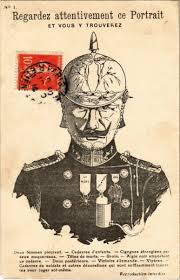 |
| Blogger.com | HISTORY IN IMAGES: Pictures Of War, History , WW2: Rare German WW1 Propaganda Posters | 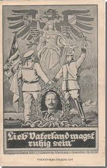 |
| Gentleman's Military Interest Club | Flammenwerfer! Flames, skulls and stuff - Page 41 - Germany: Imperial: Uniforms, Headwear, Insignia & Personal Equipment - Gentleman's Military Interest Club | 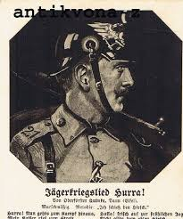 |
| Etsy | German Luftwaffe Poster - Etsy | 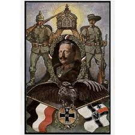 |
| Flickr | Bündnis Deutschland Österreich Kaiser Wilhelm II. und Kais… | Flickr | 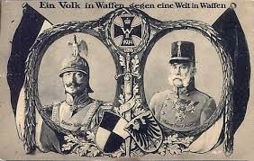 |
| Flickr | Image from page 22 of "War echoes; or Germany and Austria … | Flickr | 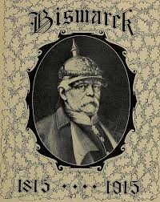 |
| Etsy | Vintage 1980s RPGA Polyhedron Newszine Fantasy Roleplaying Magazine for Dungeons and Dragons Gamers Back Issues - Out of Print - Etsy | 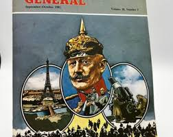 |
| Getty Images | Hitler, Adolf*20.04.1889-+Politician, NSDAP, Germany- special issue... News Photo - Getty Images | 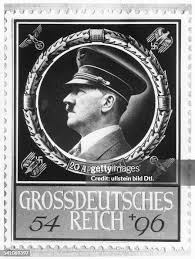 |
| PICRYL | 1914 Kaiser Wilhelm II (Guillermo II) (30672425622) - PICRYL - Public Domain Media Search Engine Public Domain Search | 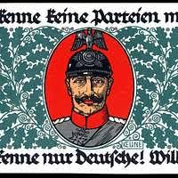 |
| Der Kaiser rief und Alle, Alle kamen!" (Translation: The emperor called and everyone, everyone came!) Postcard from 1914. : r/PropagandaPosters | 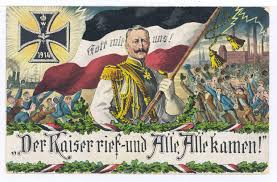 | |
| Alamy | Fürst Otto von Bismarck, Pickelhaube, Fünfzigjähriger, Portrait | usage worldwide Stock Photo - Alamy | 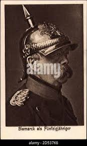 |
| Period Paper Historic Art LLC | 1915 Cover Otto von Bismarck Prussian Statesman Imperial Chancellor Ge – Period Paper Historic Art LLC | 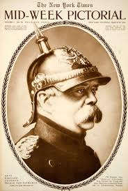 |
| eBay | Reproduction WWI Germany Field Marshall Paul von Hindenburg Propaganda Poster | eBay | 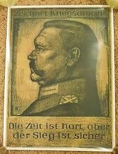 |
| Map of Europe if both World Wars were avoided : r/2westerneurope4u | 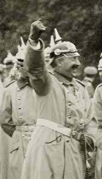 | |
| In Italy we say "Dio merda" in such instances. : r/2westerneurope4u | 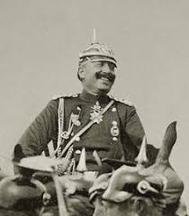 | |
| Wholesome chungus blessed : r/HOI4memes | ||
| Manitoba Museum | The End of World War One - Manitoba Museum | 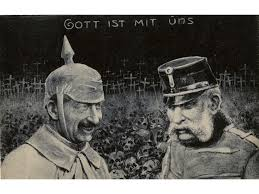 |
| TikTok | I made two Russian Empire edits German Empire edit timeeeeee enjoy!!! ... | Empire Edits | TikTok | 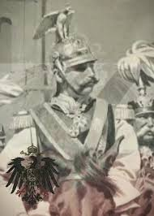 |
| TikTok | Kaiser Wilhelm Ii | TikTok | 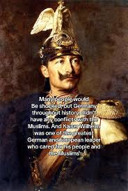 |
| Wikipedia | Guilherme Gomes Fernandes - Wikipedia | 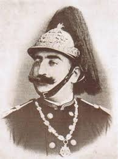 |
| AbeBooks | Reklamemarke Kaiser Wilhelm I.: Manuscript / Paper Collectible | Veikkos | 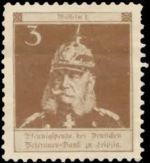 |
| eBay | 1915 NY Times 03-25 Mid Week War Pictorial WWI Magazine | eBay | 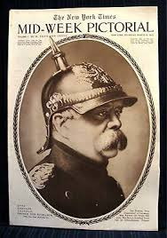 |
| Etsy | Large WW1 Oil on Canvas Painting - Etsy | 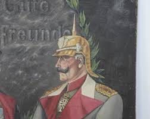 |
| eBay | Austro-Hungarian army under the image of crowned monarch Emperor Franz Joseph I | eBay | 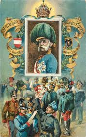 |
| BoardGameGeek | Guns of August, Turn 2 Sep-1914 | Video | BoardGameGeek | |
| Allposters | Künstler Kaiser Wilhelm II, Lieb Vaterland Magst Giclee Print | AllPosters.com | |
| Album Online | WINTERHILFSWERK ES PEOPLE - Stock Photos, illustrations, video and images - Album | |
| КНУ імені Тараса Шевченка | DOI: 10.17721/2519-4801.2023.1.01 REPRESENTING NATIONAL HISTORIES IN POPULAR ILLUSTRATED LITERATURE: ILLUSTRATIONS BY ARTHUR KAM | |
| Bridgeman Images | Image of Embossed Coat of Arms Litho Heil Kaiser Dir, Kaiser Wilhelm | |
| war-relics.com | Erinnerung an den Reichsparteitag der NSDAP in Nürnberg Post card Reproduction for reference only - War-Relics Buyers and Sellers of War Memorabilia | War Antiques | German Weapons | |
| TouchStamps | Stamp: Kaiser Wilhelm II (Germany, Modern Private Post Offices 2009) - TouchStamps | |
| eBay | Postcard postcard centenary liberation of Germany German Kaiser | eBay | |
| eBay | Germany- 1888-1913 War Military Vignette Stamp Kaiser Alexander Regiment Nr. 1 | eBay | |
| X | 📜Echoes of Empire📜 (@EchoesofEmpire_) on X |